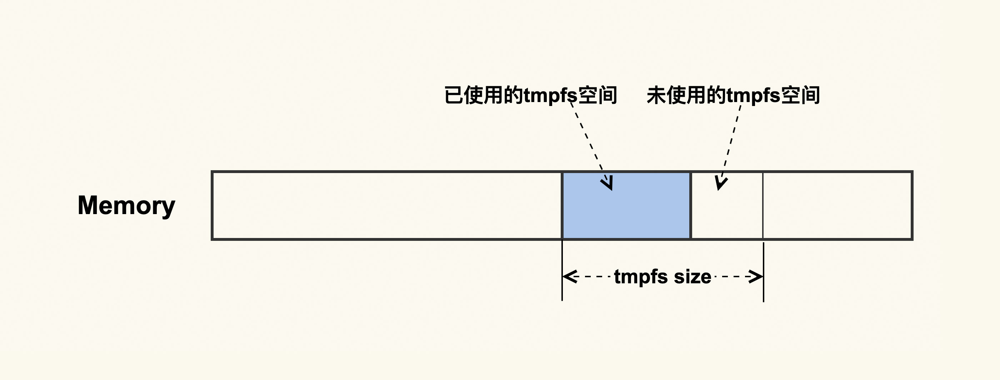
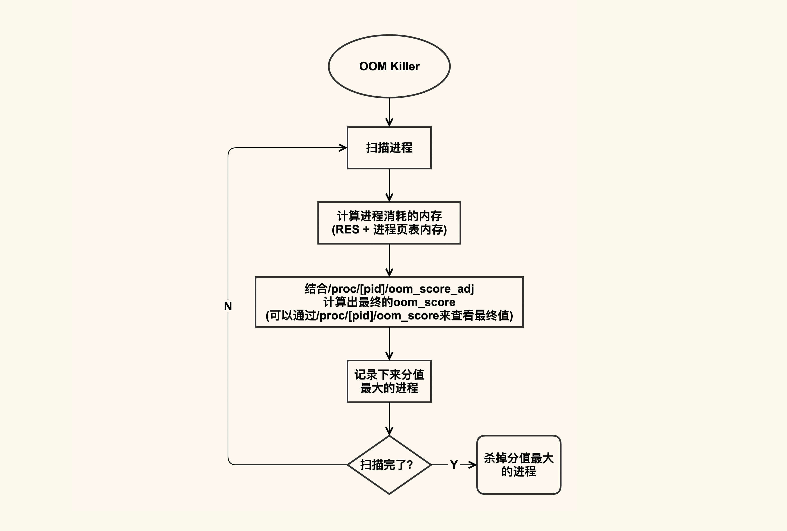

- 00 开篇词 如何让Linux内核更好地服务应用程序？.md.html
- 01 基础篇 如何用数据观测Page Cache？.md.html
- 02 基础篇 Page Cache是怎样产生和释放的？.md.html
- 03 案例篇 如何处理Page Cache难以回收产生的load飙高问题？.md.html
- 04 案例篇 如何处理Page Cache容易回收引起的业务性能问题？.md.html
- 05 分析篇 如何判断问题是否由Page Cache产生的？.md.html
- 06 基础篇 进程的哪些内存类型容易引起内存泄漏？.md.html
- 07 案例篇 如何预防内存泄漏导致的系统假死？.md.html
- 08 案例篇 Shmem：进程没有消耗内存，内存哪去了？.md.html
- 09 分析篇 如何对内核内存泄漏做些基础的分析？.md.html
- 10 分析篇 内存泄漏时，我们该如何一步步找到根因？.md.html
- 11 基础篇 TCP连接的建立和断开受哪些系统配置影响？.md.html
- 12 基础篇 TCP收发包过程会受哪些配置项影响？.md.html
- 13 案例篇 TCP拥塞控制是如何导致业务性能抖动的？.md.html
- 14 案例篇 TCP端到端时延变大，怎样判断是哪里出现了问题？.md.html
- 15 分析篇 如何高效地分析TCP重传问题？.md.html
- 16 套路篇 如何分析常见的TCP问题？.md.html
- 17 基础篇 CPU是如何执行任务的？.md.html
- 18 案例篇 业务是否需要使用透明大页：水可载舟，亦可覆舟？.md.html
- 19 案例篇 网络吞吐高的业务是否需要开启网卡特性呢？.md.html
- 20 分析篇 如何分析CPU利用率飙高问题 ？.md.html
- 加餐 我是如何使用tracepoint来分析内核Bug的？.md.html
- 结束语 第一次看内核代码，我也很懵逼.md.html
- 捐赠
08 案例篇 Shmem：进程没有消耗内存，内存哪去了？
你好，我是邵亚方。
在前一节课，我们讲述了进程堆内存的泄漏以及因为内存泄漏而导致的OOM的危害。这节课我们继续讲其他类型的内存泄漏，这样你在发现系统内存越来越少时，就能够想到会是什么在消耗内存。
有的内存泄漏会体现在进程内存里面，这种相对好观察些；而有的内存泄漏就很难观察了，因为它们无法通过观察进程消耗的内存来进行判断，从而容易被忽视，比如Shmem内存泄漏就属于这种容易被忽视的，这节课我们重点来讲讲它。
进程没有消耗内存，内存哪去了？
我生产环境上就遇到过一个真实的案例。我们的运维人员发现某几台机器used（已使用的）内存越来越多，但是通过top以及其他一些命令，却检查不出来到底是谁在占用内存。随着可用内存变得越来越少，业务进程也被OOM killer给杀掉，这给业务带来了比较严重的影响。于是他们向我寻求帮助，看看产生问题的原因是什么。
我在之前的课程中也提到过，在遇到系统内存不足时，我们首先要做的是查看/proc/meminfo中哪些内存类型消耗较多，然后再去做针对性分析。但是如果你不清楚/proc/meminfo里面每一项的含义，即使知道了哪几项内存出现了异常，也不清楚该如何继续去分析。所以你最好是记住/proc/meminfo里每一项的含义。
回到我们这个案例，通过查看这几台服务器的/proc/meminfo，发现是Shmem的大小有些异常：
$ cat /proc/meminfo
...
Shmem 16777216 kB
...
那么Shmem这一项究竟是什么含义呢？该如何去进一步分析到底是谁在使用Shmem呢？
我们在前面的基础篇里提到，Shmem是指匿名共享内存，即进程以mmap（MAP_ANON|MAP_SHARED）这种方式来申请的内存。你可能会有疑问，进程以这种方式来申请的内存不应该是属于进程的RES（resident）吗？比如下面这个简单的示例：
#include <sys/mman.h>
#include <string.h>
#include <unistd.h>
#define SIZE (1024*1024*1024)
int main()
{
char *p;
p = mmap(NULL, SIZE, PROT_READ|PROT_WRITE, MAP_ANON|MAP_SHARED, -1, 0);
if (!p)
return -1;
memset(p, 1, SIZE);
while (1) {
sleep(1);
}
return 0;
}
运行该程序后，通过top可以看到确实会体现在进程的RES里面，而且还同时体现在了进程的SHR里面，也就是说，如果进程是以mmap这种方式来申请内存的话，我们是可以通过进程的内存消耗来观察到的。
但是在我们生产环境上遇到的问题，各个进程的RES都不大，看起来和/proc/meminfo中的Shmem完全对应不起来，这又是为什么呢？
先说答案：这跟一种特殊的Shmem有关。我们知道，磁盘的速度是远远低于内存的，有些应用程序为了提升性能，会避免将一些无需持续化存储的数据写入到磁盘，而是把这部分临时数据写入到内存中，然后定期或者在不需要这部分数据时，清理掉这部分内容来释放出内存。在这种需求下，就产生了一种特殊的Shmem：tmpfs。tmpfs如下图所示：

它是一种内存文件系统，只存在于内存中，它无需应用程序去申请和释放内存，而是操作系统自动来规划好一部分空间，应用程序只需要往这里面写入数据就可以了，这样会很方便。我们可以使用moun命令或者df命令来看系统中tmpfs的挂载点：
$ df -h
Filesystem Size Used Avail Use% Mounted on
...
tmpfs 16G 15G 1G 94% /run
...
就像进程往磁盘写文件一样，进程写完文件之后就把文件给关闭掉了，这些文件和进程也就不再有关联，所以这些磁盘文件的大小不会体现在进程中。同样地，tmpfs中的文件也一样，它也不会体现在进程的内存占用上。讲到这里，你大概已经猜到了，我们Shmem占用内存多，是不是因为Shmem中的tmpfs较大导致的呢？
tmpfs是属于文件系统的一种。对于文件系统，我们都可以通过df来查看它的使用情况。所以呢，我们也可以通过df来看是不是tmpfs占用的内存较多，结果发现确实是它消耗了很多内存。这个问题就变得很清晰了，我们只要去分析tmpfs中存储的是什么文件就可以了。
我们在生产环境上还遇到过这样一个问题：systemd不停地往tmpfs中写入日志但是没有去及时清理，而tmpfs配置的初始值又太大，这就导致systemd产生的日志量越来越多，最终可用内存越来越少。
针对这个问题，解决方案就是限制systemd所使用的tmpfs的大小，在日志量达到tmpfs大小限制时，自动地清理掉临时日志，或者定期清理掉这部分日志，这都可以通过systemd的配置文件来做到。tmpfs的大小可以通过如下命令（比如调整为2G）调整：
$ mount -o remount,size=2G /run
tmpfs作为一种特殊的Shmem，它消耗的内存是不会体现在进程内存中的，这往往会给问题排查带来一些难度。要想高效地分析这种类型的问题，你必须要去熟悉系统中的内存类型。除了tmpfs之外，其他一些类型的内存也不会体现在进程内存中，比如内核消耗的内存：/proc/meminfo中的Slab（高速缓存）、KernelStack（内核栈）和VmallocUsed（内核通过vmalloc申请的内存），这些也是你在不清楚内存被谁占用时需要去排查的。
如果tmpfs消耗的内存越积越多而得不到清理，最终的结果也是系统可用内存不足，然后触发OOM来杀掉进程。它很有可能会杀掉很重要的进程，或者是那些你认为不应该被杀掉的进程。
OOM杀进程的危害
OOM杀进程的逻辑大致如下图所示：

OOM killer在杀进程的时候，会把系统中可以被杀掉的进程扫描一遍，根据进程占用的内存以及配置的oom_score_adj来计算出进程最终的得分，然后把得分（oom_score）最大的进程给杀掉，如果得分最大的进程有多个，那就把先扫描到的那个给杀掉。
进程的oom_score可以通过/proc/[pid]/oom_score来查看，你可以扫描一下你系统中所有进程的oom_score，其中分值最大的那个就是在发生OOM时最先被杀掉的进程。不过你需要注意，由于oom_score和进程的内存开销有关，而进程的内存开销又是会动态变化的，所以该值也会动态变化。
如果你不想这个进程被首先杀掉，那你可以调整该进程的oom_score_adj改变这个oom_score；如果你的进程无论如何都不能被杀掉，那你可以将oom_score_adj配置为-1000。
通常而言，我们都需要将一些很重要的系统服务的oom_score_adj配置为-1000，比如sshd，因为这些系统服务一旦被杀掉，我们就很难再登陆进系统了。
但是，除了系统服务之外，不论你的业务程序有多重要，都尽量不要将它配置为-1000。因为你的业务程序一旦发生了内存泄漏，而它又不能被杀掉，这就会导致随着它的内存开销变大，OOM killer不停地被唤醒，从而把其他进程一个个给杀掉，我们之前在生产环境中就遇到过类似的案例。
OOM killer的作用之一，就是找到系统中不停泄漏内存的进程然后把它给杀掉，如果没有找对，那就会误杀其他进程，甚至是误杀了更为重要的业务进程。
OOM killer除了会杀掉一些无辜进程外，它选择杀进程的策略也未必是正确的。接下来又到了给内核找茬的时刻了，这也是我们这个系列课程的目的：告诉你如何来学些Linux内核，但同时我也要告诉你，要对内核有怀疑态度。下面这个案例就是一个内核的Bug。
在我们的一个服务器上，我们发现OOM killer在杀进程的时候，总是会杀掉最先扫描到的进程，而由于先扫描到的进程的内存太小，就导致OOM杀掉进程后很难释放出足够多的内存，然后很快再次发生OOM。
这是在Kubernetes环境下触发的一个问题，Kubernetes会将某些重要的容器配置为Guaranteed （对应的oom_score_adj为-998），以防止系统OOM的时候把该重要的容器给杀掉。 然而，如果容器内部发生了OOM就会触发这个内核Bug，导致总是杀掉最先扫描到的那个进程。
针对该内核Bug，我也给社区贡献了一个patch（mm, oom: make the calculation of oom badness more accurate）来修复这个选择不到合适进程的问题，在这个patch的commit log里我详细地描述了该问题，感兴趣的话你可以去看下。
课堂总结
这节课，我们学习了tmpfs这种类型的内存泄漏以及它的观察方法，这种类型的内存泄漏和其他进程内存泄漏最大的不同是，你很难通过进程消耗的内存来判断是哪里在泄漏，因为这种类型的内存不会体现在进程的RES中。但是，如果你熟悉内存问题的常规分析方法，你就能很快地找到问题所在。
- 在不清楚内存被谁消耗时，你可以通过/proc/meminfo找到哪种类型的内存开销比较大，然后再对这种类型的内存做针对性分析。
- 你需要配置合适的OOM策略（oom_score_adj）来防止重要的业务被过早杀掉（比如将重要业务的oom_score_adj调小为负值），同时你也需要考虑误杀其他进程，你可以通过比较进程的/proc/[pid]/oom_score，来判断出进程被杀的先后顺序。
- 再次强调一遍，你需要学习内核，但同时你也需要对内核持怀疑态度。
总之，你对不同内存类型的特点了解越多，你在分析内存问题的时候（比如内存泄漏问题）就会更加高效。熟练掌握这些不同的内存类型，你也能够在业务需要申请内存时选择合适的内存类型。
课后作业
请你运行几个程序，分别设置不同的oom_score_adj，并记录下它们的oom_score是什么样的，然后消耗系统内存触发OOM，看看oom_score和进程被杀的顺序是什么关系。欢迎你在留言区与我讨论。
感谢你的阅读，如果你认为这节课的内容有收获，也欢迎把它分享给你的朋友，我们下一讲见。
© 2019 - 2023 Liangliang Lee. Powered by gin and hexo-theme-book.